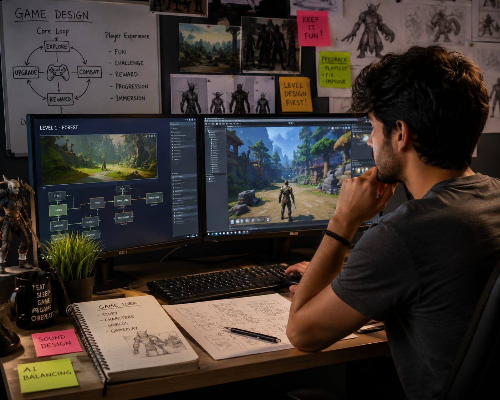

🎮 Game Designer
🧑💻 What Do They Do?
- You play game in mobile, computer or PlayStation.
- You notice exciting characters, missions, levels.
- The story, gameplay, rewards, and visual style make the game fun and addictive.
- Someone planned and designed all those game experiences.
- That person is called a Game Designer. 👉 In simple words: Game Designers create gameplay experiences, stories, and levels for video games.

🎓 How to Become a Game Designer
After completing 10th, students can start learning game art, animation, story design, level creation, and basic game development through diploma or certificate courses.
Diploma in Game Design & Integration
Duration: 1 – 2 Years
Eligibility: Class 10 pass
Exam: Merit-based or interview
Diploma in 3D Animation & VFX (Game Art Focus)
Duration: 2 Years
Eligibility: Class 10 pass
Exam: Portfolio review or direct admission
Certificate in Game Art / Level Design
Duration: 6 Months – 1 Year
Eligibility: Class 10 pass
Exam: Direct admission
📝 Exam Details
(Click on the exam name to see full details)
Merit-based Admission Portfolio Review Direct Admission Creative InterviewNote: Students can later move into advanced game design, animation, programming, UI/UX, or game development courses through higher studies.
1. The Creative Path (After 12th)
B.Des (Bachelor of Design) in Game Design
Duration: 4 Years
Eligibility: 10+2 Pass (Any Stream)
Exam: NID DAT, UCEED, SEED, MITID-DAT
B.Sc in Gaming Design / Game Art
Duration: 3 Years
Eligibility: 10+2 Pass
Exam: LPUNEST, CUET, or Merit-based
2. The Technical Path (After 12th)
B.Tech in Computer Science (Game Development)
Duration: 4 Years
Eligibility: 10+2 Pass (Science with Math)
Exam: JEE Main, LPUNEST, or University Entrances
B.Sc in Computer Science & Game Development
Duration: 3 Years
Eligibility: 10+2 Pass (Maths preferred)
Exam: Merit-based / University Specific
📝 Exam Details
(Click on the exam name to see full details)
NID DAT UCEED SEED MITID-DAT LPUNEST CUET JEE Main Merit-based AdmissionNote: Students can choose the creative path for game art, storytelling, character design, and level design, or the technical path for coding, game engines, AI, and gameplay programming.
4. Professional Specialization (After Graduation)
M.Des (Master of Design) in Digital Game Design
Duration: 2 Years
Eligibility: Graduation (Any Stream)
Exam: CEED, NID DAT (M.Des)
PG Diploma in Game Development
Duration: 1 Year
Eligibility: Graduation in Science / Engineering
Exam: Direct Admission / Coding Test
M.Sc in Game Technology / Animation
Duration: 2 Years
Eligibility: Graduation in Related Field
Exam: University Entrance / Merit-based
📝 Exam Details
(Click on the exam name to see full details)
CEED NID DAT (M.Des) Coding Test Direct Admission University Entrance Merit-based AdmissionNote: After graduation, students can specialize in advanced game design, game engines, AI systems, animation, AR/VR, interactive storytelling, or multiplayer game development.
These online courses help students learn game design, game art, storytelling, coding, and game development from beginner to advanced level.
Epic Games Game Design Professional Certificate
Duration: 3 – 6 Months
Eligibility: Open to all (Beginner Level)
Exam: Project-based Assessments (Unreal Engine)
Game Design: Art and Concepts Specialization
Duration: 3 – 6 Months
Eligibility: Open to all
Exam: Peer-reviewed Design Projects & Prototypes
Game Design and Development with Unity
Duration: 6 Months
Eligibility: Open to all
Exam: Final Capstone Project (Playable Game)
C# Programming for Unity Game Development
Duration: 3 – 6 Months
Eligibility: Open to all
Exam: Programming Assignments & Quizzes
Note: Online courses are useful for building portfolios, learning game engines like Unity and Unreal Engine, and practicing real game development projects.
📝 Exam Details
(Click on the exam name to see full details)
Project-based Assessments Peer-reviewed Design Projects Final Capstone Project Programming Assignments & Quizzes(Age limits, marks, and admission process may vary depending on the college or state. These courses are available in many colleges and universities across India. You can choose colleges based on your location, budget, and entrance exams.)
🏫 Top Colleges
(Click on the college to know the details)
After 10th
Artemisia College of Art & Design (ACAD), Indore ICAT Design & Media College (Chennai/Bangalore) Arena Animation / MAAC Asian Academy of Film & Television (AAFT), NoidaAfter 12th
National Institute of Design (NID), Ahmedabad MIT Institute of Design (MIT-ID), Pune UPES School of Design, Dehradun Whistling Woods International (WWI), Mumbai Lovely Professional University (LPU), PunjabImagine you are working as a Game Designer in a creative gaming studio.
A gaming company wants an exciting new game that players around the world will enjoy.
Your job is to create fun gameplay ideas, characters, missions, and virtual worlds.
First, you brainstorm ideas for the game's story, rules, levels, and challenges.
You work with artists, programmers, and animators to turn ideas into an actual game.
You test the game carefully to make sure it feels exciting, balanced, and enjoyable for players.
Finally, the game is released on platforms like PlayStation, Xbox, PC, or mobile phones.
If this excites you, then Game Designing may be the perfect career for you.
Where do Game Designers work? (Job Roles + Growth)
These are some roles you can explore in Game Design.
You usually start with beginner roles and grow with experience.
🔵 Beginner Roles
Game Tester (QA)
After 12th or Short-term Certification
They play the game repeatedly to find technical "bugs" and check if the game is actually fun and easy to understand.
Junior Game Artist
After 10th (Diploma) or 12th (B.Des)
They follow instructions to create basic 3D shapes, small environment objects, or textures like wood and stone for the game world.
Junior Programmer
After 12th (B.Tech / B.Sc)
They write the basic code for simple game actions, such as making a character jump or opening a door when a button is pressed.
🔵 Mid-Level Roles
Game Designer
After B.Des or Diploma + Experience
They act as the "Architects" who design the rules, levels, and story of the game to make sure the player stays excited.
Level Designer
After B.Des or Certification + Portfolio
They specifically focus on building the maps and layouts of each stage to guide the player through the mission smoothly.
Character Artist
After B.Des / BFA + Advanced 3D Skills
They use digital tools to sculpt detailed 3D models of heroes and villains, including their facial expressions and clothing.
🟣 Advanced Roles
Creative Director
After Graduation + 8+ Years Experience
They hold the "Big Vision" for the game, leading all the artists and programmers to ensure the final product looks and plays perfectly.
Lead Programmer
After B.Tech / M.Tech + Leadership Experience
They manage the entire coding team and solve the most difficult technical problems to make sure the game runs smoothly on consoles and PCs.
Technical Artist
After B.Des / B.Tech + Experience in both Art and Code
They act as the "Bridge" between the artists and programmers, making sure the beautiful art doesn't slow down the game's performance.
AAA Game Studios
You work for world-famous companies like Ubisoft, Rockstar Games, or EA
Mobile & Casual Gaming
You join international teams at companies like King or Rovio to design games.
Indie Game Development
You work in small, creative global teams like Steam or Epic Games Store.
Serious Games & Simulations
You design interactive virtual tools for industries like Healthcare or Defense
VR/AR & Metaverse Design
You create immersive virtual worlds for global tech companies.
Esports & Tournament Design
You work with international esports organizations to design tournament maps, gaming environments.
(Click Yes or No for each question)
1. Have you ever wondered how a video game is created?
2. Do you enjoy creating new ideas or thinking creatively?
3. Do you enjoy creating imaginary stories or worlds in your mind?
4. Are you interested in learning how a game is developed?
5. Have you ever thought about creating your own game?